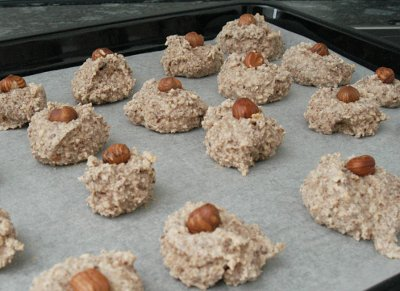

| Zutaten für 4 Personen: | |
| 3 | Eiweiss |
| 150 g | Zucker |
| 300 g | gemahlene Haselnüsse |
| 30 g | ganze Haselnüsse für die Garnitur |
Eiweiss steif schlagen.
Den Zucker unterziehen und die Haselnüsse zugeben. So lange mischen bis der Teig gleichmässig ist.
Mit 2 Teelöffeln Häufchen formen und mit einer ganzen Nuss garnieren.
Bei 200°C 6 Minuten backen.
Vermutlich Herbert Eigenmann.
Schmecken richtig fein. Aufpassen mit der Backdauer. Meine Häufchen wurden etwas grösser und brauchten dann eher 12 Minuten. RE 18.5.2010
@LINKBACK_TAG@ @WAKELOCK@